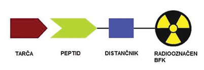
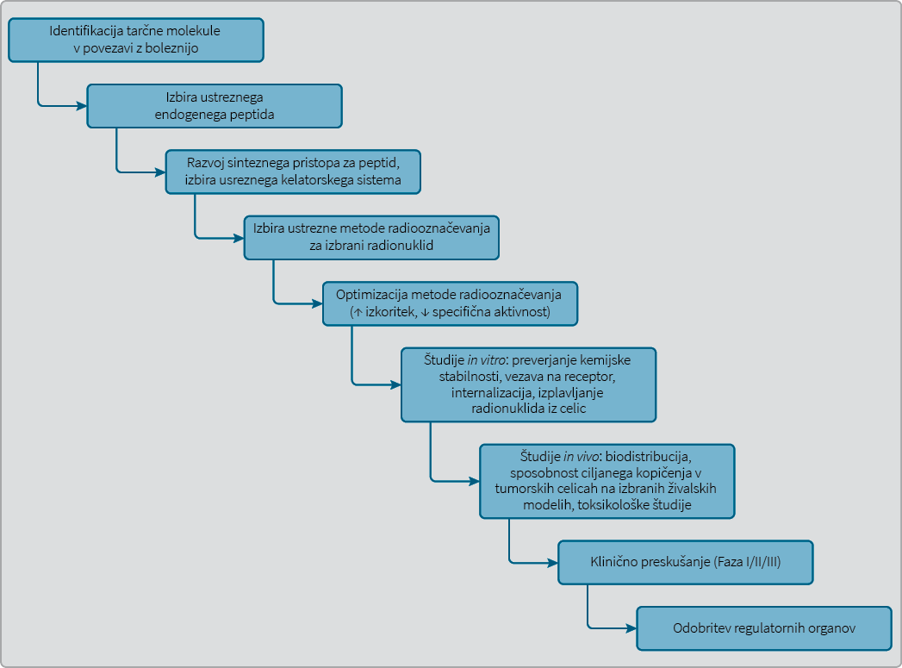
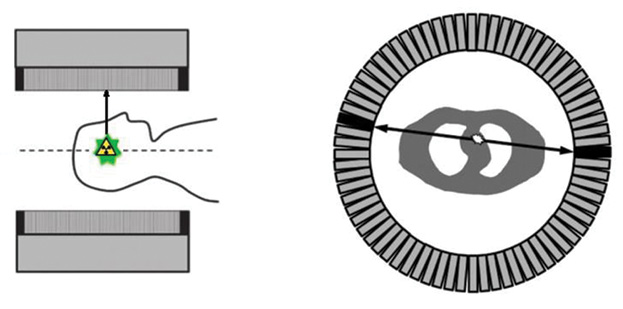
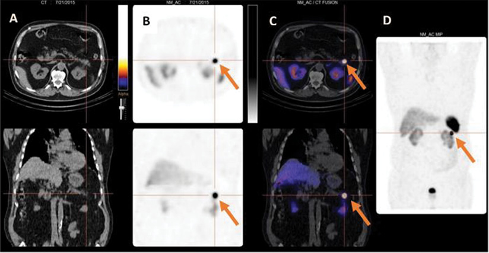
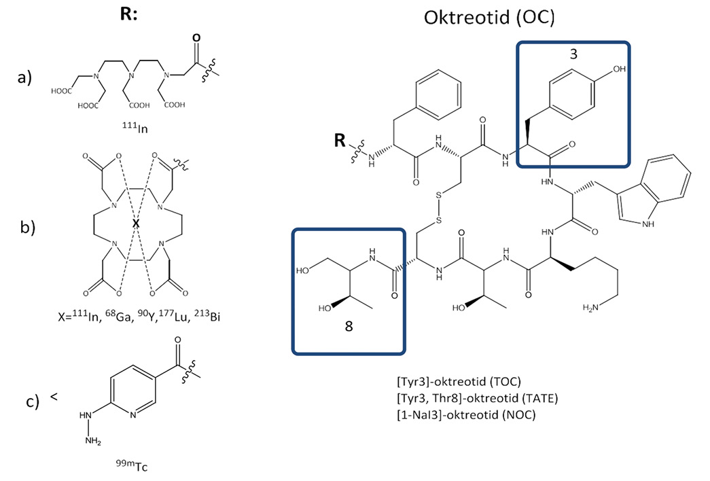
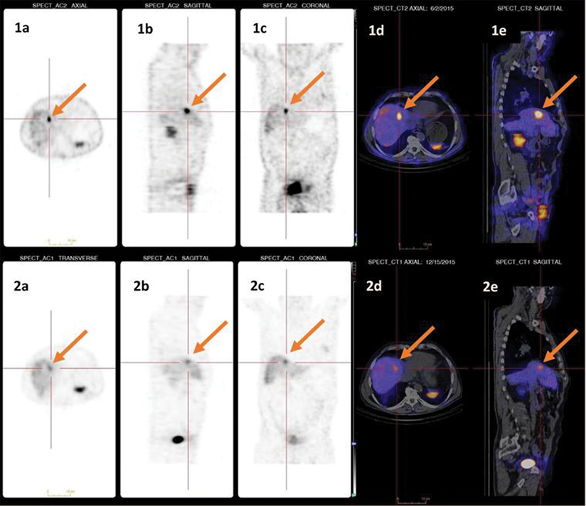
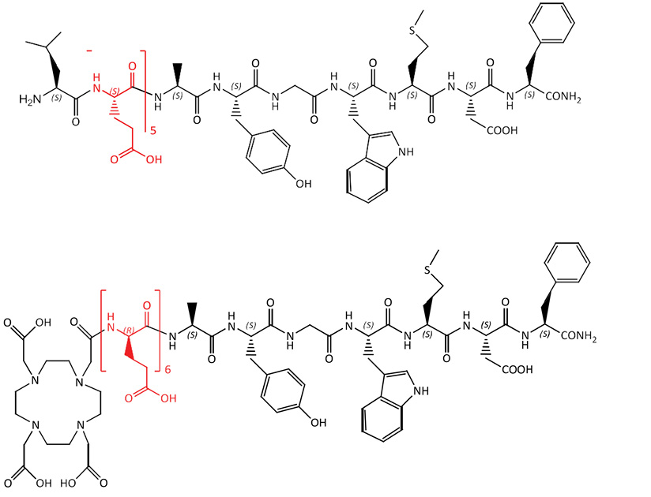

Radiooznačeni peptidi v nuklearni medicini
Radiolabelled peptides in nuclear medicine
Izvleček
Nuklearna medicina pri obravnavi onkoloških bolnikov omogoča slikovni prikaz oziroma umeščenost tumorjev, ciljano zdravljenje ter spremljanje uspešnosti zdravljenja. Visoko specifične radiooznačene peptidne učinkovine lahko izkoristimo za ciljanje tumorskih celic, ki imajo na svoji površini čezmerno izražene receptorje za te učinkovine. Enako peptidno učinkovino lahko radiooznačimo tako z diagnostičnimi kot terapevtskimi radionuklidi. Ti teranostični pari učinkovin omogočajo personalizirani pristop pri obravnavi bolnikov. V preglednem članku opisujemo dva sistema teranostičnih parov, ki jih v nuklearni medicini uporabljamo za diagnosticiranje ter zdravljenje tumorjev. Klasičen primer takšnih teranostičnih parov so radiooznačeni analogi somatostatina, ki se rutinsko uporabljajo pri diagnosticiranju ter zdravljenju nevroendokrinih tumorjev (NET) s čezmerno izraženimi receptorji za somatostatin. Radiooznačeni analogi minigastrina, ki se vežejo na receptorje za holecistokinin-2, pa so primerni za diagnosticiranje medularnega raka ščitnice (MTC), za uporabnost in varnost pri zdravljenju pa še potekajo klinična preskušanja.
Abstract
Nuclear medicine plays an important role in the management of oncology patients. It enables visualization and localization of tumours, targeted radionuclide therapy and monitoring patient response to therapy. Highly specific peptide molecules can target tumour cells with overexpressed receptors for regulatory peptides and their analogues. When these peptides are radiolabelled, we can use them either for diagnosis or therapy, depending on the radionuclide used. These theranostic pairs enable nuclear medicine a personalized approach to patient management. The purpose of this review is to describe the overview of radiolabelled peptides and to present two theranostic systems used in nuclear medicine. Classical examples of theranostic pairs are radiolabelled somatostatin analogues that are routinely used in diagnosis and targeted radionuclide therapy of neuroendocrine neoplasms (NEN). On the other hand, radiolabelled minigastrin analogues can be used for the diagnosis of metastatic medullary thyroid carcinoma (MTC) and have a potential to be used also in targeted radionuclide therapy.
1 Uvod
1.1 Radiofarmaki
Nuklearna medicina
|
Radionuklid |
T1/2 |
Tip sevanja |
Pridobivanje |
|
|
PET |
ogljik-11 (11C) |
20,3 min |
β+ (100 %) |
ciklotron |
|
fluor-18 (18F) |
110 min |
β+ (97 %) |
ciklotron |
|
|
baker-64 (64Cu) |
12,8 h |
β+ (19 %) |
ciklotron |
|
|
galij-68 (68Ga) |
67,6 min |
β+ (89 %) |
generator |
|
|
SPECT |
cirkonij-89 (89Zr) |
78,4 h |
β+ (23 %) |
ciklotron |
|
jod-124 (124I) |
4.17 dni |
β+ (23 %) |
ciklotron |
|
|
galij-67 (67Ga) |
78,26 h |
γ |
ciklotron |
|
|
tehnecij-99m (99mTc) |
6,0 h |
γ |
generator |
|
|
Terapija |
indij-111 (111In) |
67,9 h |
γ |
ciklotron |
|
itrij-90 (90Y) |
64,0 h |
β- |
generator |
|
|
jod-131 (131I) |
8 dni |
β- |
fisija |
|
|
lutecij-177 (177Lu) |
6,71 dni |
β- |
reaktor |
|
|
bizmut-213 (213Bi) |
45 min |
α |
generator |
Večina radiofarmakov se uporablja v diagnostične namene z uporabo radionuklidov, ki izsevajo bodisi žarke gama (indij-111, tehnecij-99m) ali pozitrone, ki se po združitvi z elektronom anihilirajo in izsevajo dva žarka gama pod kotom 180 ° (glej poglavje 1.3.). Za zdravljenje oz. ciljano radionuklidno terapijo pa uporabljamo radionuklide, ki pri razpadu izsevajo delce beta (jod-131, lutecij-177, itrij-90) ali alfa (bizmut-213). Pri interakciji s celicami ti delci povzročijo visoko gostoto poškodb, kar ima za posledico celično okvaro in/ali smrt celice. Citotoksičnost je lahko posledica neposredne ionizacije DNA, ali pa do nje pride posredno preko tvorbe radikalov, ki reagirajo z DNA. Radiofarmaki, označeni s terapevtskimi radionuklidi, morajo v čim večjem obsegu delovati lokalno v obolelem organu ali tumorju, saj lahko sicer poškodujejo tudi zdrava (netarčna) tkiva, kar lahko vodi v neželene stranske učinke ciljane radionuklidne terapije.
Tumorske celice se od zdravih razlikujejo tudi po tem, da imajo na svoji površini drugače izražene receptorje za regulacijske peptide. Radioznačeni peptidi, ki se specifično vežejo na receptorje, so pomembna skupina zdravil, saj imajo visoko afiniteto in specifičnost za ta receptorska mesta in omogočajo vizualizacijo in/ali ciljano uničevanje tumorskih celic. Radiooznačeni peptidi so ponavadi sestavljeni iz peptidnega dela, ki je odgovoren za vezavo na receptor, distančnika, s katerim moduliramo farmakokinetične lastnosti, ter bifunkcionalnega kelatorja, ki omogoča vezavo radionuklida (Slika 1).

Za slikovno diagnostiko ter ciljano terapijo različnih tumorjev so razvili veliko peptidnih radiofarmakov, med katerimi jih je kar nekaj v vsakodnevni klinični uporabi. V Tabeli 2 so povzeti glavni receptorski tarčni sistemi, ki so čezmerno izraženi pri različnih tumorjih in so tarče peptidnih radiofarmakov. Kot »dostavni sistem« lahko uporabljamo naravne ali sintetične analoge regulacijskih peptidov.
|
Tumor |
Tarča (receptor) |
Peptid |
Faza razvoja |
|
Nevroendokrini tumorji (NET), gastroenteropankreatični tumorji, ne- Hodgkingov limfom, paraganglioma, melanom, drobnocelični rak pljuč |
|
Somatostatin |
1 |
|
Rak prostate, trebušne slinavke, želodca, drobnocelični rak pljuč |
|
Bombesin |
2 |
|
Medularni karcinom ščitnice ( |
|
CCK/gastrin |
2 |
|
Insulinom, gastrinom, feokromocitom, paragangliom, MTC |
|
Eksendin |
2 |
|
Rak možganov, pljuč, jajčnikov, dojk |
αvβ3-integrin |
RGD |
2 |
|
Melanom |
|
α-MSH |
2 |
|
Drobnocelični rak pljuč, rak debelega črevesja, prostate, dojk |
|
Nevrotenzin |
2 |
|
Rak dojk, prostate |
|
NPY |
3 |
|
Glioblastom, astrocitom, MTC |
|
Substanca P |
2 |
|
Rak dojk, pljuč, prostate |
Receptor |
CXCR4 |
2 |
1.2 Razvoj radiofarmakov
Razvoj radiofarmakov je podoben razvoju neradioaktivnih klasičnih zdravil, vendar ima zaradi radioaktivne narave tudi določene posebnosti. Pri razvoju »tradicionalnih« zdravil je eden od ciljev doseči povišano plazemsko koncentracijo učinkovine, ki naj bi bila za doseganje učinka na tarčne organe čimbolj konstantna. Pri radiofarmakih pa želimo doseči sorazmerno hiter plazemski očistek, ki omogoča ravno dovolj časa, da se radiofarmak nakopiči v tarčnem organu, medtem ko se »preostanek« radiofarmaka hitro izloči. S tem dosežemo, da je večina radioaktivnosti v tarčnem organu hitro po i.v. aplikaciji. Specifičnost umeščenosti pri klasičnih zdravilih ni kritična za razvoj, saj je lahko koncentracija učinkovine visoka tako na mestu, kjer želimo biološki odgovor, kot tudi v netarčnih tkivih. Pri radiofarmakih je specifičnost umeščenosti zelo pomembna, saj se tako izognemo povišanemu sevanju v netarčnih organih, kar ima za posledico slabo kakovost slik in/ali povzročitev sevalnih poškodb v netarčnem tkivu, zato je pri razvoju radiofarmakov osrednjega pomena t. i. razmerje tarčni organ / ozadje (2). Ne glede na omenjene posebnosti ima razvoj peptidnih radiofarmakov podobno pot kot razvoj klasičnih zdravil. Na Sliki 2 so podrobno predstavljeni koraki pri razvoju peptidnih radiofarmakov. Glavna posebnost razvoja radiofarmakov je radiooznačevanje z izbranim radionuklidom, ki usmerja izbor ter optimizacijo metode radiooznačevanja.

Razvoj peptidne kemije omogoča načrtovanje, strukturno analizo ter sintezo novih peptidnih molekul z izboljšanimi lastnostmi (povišana specifičnost, moč vezave na tarčne molekule) za uporabo v nuklearni medicini:
•Optimizacija vezave na receptorje. Z uporabo računalniškega modeliranja ter informacij o strukturi tarčnih molekul lahko načrtujemo peptide z visoko afiniteto (IC50 vrednosti radiooznačenih peptidov v nanomolarnem območju) do tarčnih receptorjev na tumorskih celicah.
•Izboljšanje kemijskih lastnosti radiooznačenih peptidov. S povečanjem hidrofilnosti teh molekul lahko zmanjšamo kopičenje v jetrih in/ali zmanjšamo vezavo na plazemske proteine.
•Izboljšanje metabolične (plazemske) stabilnosti z vpeljavo nenaravnih D-amino kislin, uporabo cikličnih peptidov ali peptidomimetikov. Razpad radiooznačenih peptidov v plazmi povzroči nastanek metabolitov, ki imajo spremenjene farmakokinetične lastnosti, kar lahko vodi do neželenih učinkov.
•Uporaba različnih kelatorjev za preprečevanje »sproščanja« radionuklida iz kompleksa. »Sproščanje« radionuklidov lahko predvsem pri uporabi terapevtskih radionuklidov vodi v toksičnost zaradi biodistribucije prostega radionuklida (4). Izbrani kelatorji ne smejo vplivati na vezavno kinetiko radiooznačenega peptida, vendar morajo omogočiti stabilno vezavo radionuklida. Nekateri kelatorski sistemi omogočajo vezavo različnih radionuklidov (diagnostičnih, terapevtskih), kar izkoriščamo v t. i. teranostičnem pristopu pri obravnavi bolnikov (5).
•Naboj, lipofilnost ter stabilnost radiofarmakov
1.3 Slikovne preiskave v nuklearni medicini
Večina (95 %) vseh nuklearnomedicinskih postopkov je diagnostičnih. Obstajata dve glavni skupini diagnostičnih preiskav, ki se delita glede na uporabljene radionuklide ter glede na princip zaznavanja radioaktivnosti:
1.Planarna scintigrafija, pri kateri uporabljamo radionuklide, ki neposredno izsevajo žarke gama oz. fotone (sevalci gama) in jih zaznamo s planarno kamero gama, s katero lahko prikažemo statične ali dinamične dvodimenzionalne slike.
2.Računalniška tomografija, ki je lahko:
•Enofotonska izsevna tomografija oz. SPECT (
•Pozitronska izsevna tomografija oz. PET (

Pri obeh principih nastane nuklearnomedicinska slika z detekcijo nekaj milijonov fotonov (planarna scintigrafija, SPECT) oz. fotonskih parov (PET). Večina novejših snemalnikov je povezanih z rentgensko računalniško tomografijo (

2 Radiooznačeni analogi somatostatina
Somatostatin je peptidni hormon, ki se izloča predvsem v prebavilih ter možganih in zavira izločanje mnogih endokrinih hormonov, kot so inzulin, glukagon ter gastrin (8). Biološki odgovor sproži z vezavo na družino somatostatinskih receptorjev, ki je sestavljena iz 5 podtipov (sst1-sst5), pri čemer so v tumorjih najpogosteje izraženi sst2. V nuklearni medicini so daleč najbolj uporabljeni radiooznačeni analogi somatostatina (sst), ki se uporabljajo pri diagnosticiranju in zdravljenju nevroendokrinih tumorjev (NET). Nevroendokrini tumorji se razvijejo iz celic nevroendokrinega sistema. Prisotni so v številnih organih človeškega telesa (64 % v prebavilih, 28 % v dihalih, preostali pa so NET ščitnice, kože, nadledvične žleze ter živčnih celic). So redki tumorji, a njihova incidenca v zadnjih letih narašča. Incidenčna stopnja NET prebavil (GEP NET) je 5,25/100.000 na leto, prevalenca pa je 35/100.000, kar jih uvršča na drugo mesto v skupini tumorjev prebavil. Diagnosticiranje NET zajema klinično sliko, laboratorijske preiskave, kot sta kromogranin A in 5-hidroksiindolocetna kislina, ter slikovne preiskave. Slikovna preiskava izbire je CT ali MRI v kombinaciji s scintigrafijo somatostatinskih receptorjev, ki je kot samostojna slikovna preiskava diagnostično najobčutljivejša (9).
Molekularna osnova za razvoj radiooznačenih analogov somatostatina je visoka izraženost receptorjev v plazemski membrani tumorskih celic. Čezmerna izraženost ter gostota somatostatinskih receptorjev je dokazana pri večini NET, med katere spadajo GEP NET, feokromocitom, paragangliom, nevroblastom in meningeom. Pri inzulinomu, limfomih, raku na dojki, hepatocelularnem karcinomu, medularnem raku ščitnice in drobnoceličnem raku pljuč pa je incidenca ter gostota receptorjev nižja (10). Somatostatin je pri fizioloških pogojih prisoten v dveh oblikah: kot 14- oz. 28-aminokislinska molekula (SS14 in SS28). Radiooznačeni endogeni peptidi za klinično uporabo niso primerni, saj je njihova stabilnost
Radiooznačeni analogi somatostatina, ki so podrobneje opisani v nadaljevanju, imajo optimalne lastnosti za klinično uporabo: vezavno afiniteto do receptorjev v nanomolarnem območju, hitro internalizacijo agonistov po vezavi na receptor, ustrezno farmakokinetiko, izločanje skozi ledvice ter visoko stabilnost kompleksa radionuklid – kelator, zaradi katere ne prihaja do sproščanja radionuklida

Na Sliki 5 so predstavljeni klinično najpogosteje uporabljani analogi somatostatina. Večinoma uporabljamo oktapeptidne derivate, kot so oktreotid, [Tyr3]oktreotid (TOC), [1-NaI3]oktreotid (NOC) ter [Tyr3, Thr8]oktreotid (TATE). Za radiooznačevanje peptidne derivate konjugiramo z različnimi bifunkcionalnimi kelatorji. Prvi široko uporabljeni analog somatostatina je bil z DTPA konjugirani oktreotid, radiooznačen z indijem-111 (111In-DTPA-oktreotid; Octreoscan®). Na Kliniki za nuklearno medicino UKC Ljubljana uporabljamo s tehnecijem-99m (99mTc) radiooznačen hidrazinonikotinamid-[Tyr3]oktreotid (99mTc-HYNICTOC), ki ima v primerjavi z registriranim 111In-DTPA-oktreotidom več prednosti: izboljšane farmakokinetične lastnosti, višjo afiniteto do receptorja sst2, manjšo sevalno obremenitev za preiskovanca ter nižjo ceno (13). Za radiooznačevanje s kovinskimi (3+) radionuklidi namesto DTPA uporabljamo makrociklični kelator DOTA, ki s kovinskimi 3+ radionuklidi tvori termodinamsko stabilne komplekse. To omogoča t. i. personalizirano obravnavo bolnikov z uporabo teranostičnih parov, ko isti dostavni sistem uporabimo za radiooznačevanje z različnimi radionuklidi. Tako dobljeni radiofarmaki so uporabni za diagnosticiranje, dozimetrijo in terapijo. Za slikovno diagnostiko lahko z DOTA konjugirani [Tyr3]oktreotid (DOTATOC) radiooznačimo z 111In (SPECT) ali galijem-68 (PET), kar omogoča umestitev tumorja in/ali metastaz ter oceno prejetega odmerka radioaktivnega sevanja v tumorju in netarčnih tkivih (t. i. dozimetrija). DOTATOC lahko radiooznačimo tudi s terapevtskimi radionuklidi, kot so itrij-90 ter lutecij-177 (sevalca delcev β-) ter bizmut-213 (sevalec delcev α), ki se razlikujejo po dosegu citotoksičnega učinka v tkivu, kar omogoča izbor radionuklida glede na velikost tumorja. Primer odziva bolnika po ciljani radionuklidni terapiji NET je prikazan na Sliki 6.

3 Radiooznačeni analogi minigastrina
Gastrin je linearni peptidni hormon, ki se sintetizira v endokrinih celicah G, ki se nahajajo v antrumu želodca, in se izloča iz njih. Gastrin se izloča pod vplivom dražljajev iz hrane (peptidov in aminokislin), raztegnitve stene želodca ter tudi pod vplivom avtonomnega živčevja. V telesu ga najpogosteje najdemo v treh oblikah: gastrin-34, gastrin-17 ter gastrin-14 (poimenovan tudi minigastrin). Glavne funkcije gastrina v telesu so stimulacija peristaltike v želodcu, tankem in debelem črevesu, stimulacija sekrecije HCl, praznjenje želodca, izločanja inzulina ter stimulacija izločanja HCO3- in encimov pankreasa.
Holecistokinin (CCK) je peptidni hormon, ki se sintetizira in izloča iz endokrinih celic I, ki so v mukozi tankega črevesa. Najdemo ga tudi v centralnem živčnem sistemu in perifernem živčevju, ki oživčuje prebavila, kjer najverjetneje deluje kot nevrotransmiter (14,15). Odgovoren je za krčenje mehurja, izločanje encimov iz trebušne slinavke ter sproščanje Oddijevega sfinktra, kar pospeši izločanje žolča v črevesje. Strukturno sta si gastrin in holecistokinin zelo podobna, saj imata na biološko aktivnem C-terminalnem mestu pet enakih aminokislin (-Gly-Trp-Met-Asp-Phe-NH2). Zaradi teh strukturnih elementov izkazujeta podobne fiziološke ter farmakološke odzive po vezavi na družino membranskih receptorjev, povezanih s proteinom G (16). Holecistokinin se veže na receptor za holecistokinin 1 (CCK1R) ter na receptor za holecistokinin 2 (CCK2R), gastrin pa ima vezavno afiniteto le do CCK2R, ki ga zato imenujemo tudi gastrinski receptor. Odkritje, da sta CCK1R in CCK2R čezmerno izražena pri določenih tipih tumorskih celic, je osnova za razvoj radiooznačenih analogov holecistokinina in gastrina. Pri človeških tumorjih je pogosteje izražen CCK2R, in sicer pri medularnem raku ščitnice (92 %), astrocitomu (65 %) ter stromalnem raku jajčnikov (100 %). V manjšem odstotku so prisotnost CCK2R dokazali pri gastroenteropankreatičnem raku, raku na dojki ter adenokarcinomu jajčnikov (17,18). Dve raziskavi sta pokazali tudi visoko incidenco CCK2R pri drobnoceličnem raku pljuč (89 % oz. 59 %). Nedrobnocelični raki pljuč teh receptorjev ne izražajo (17,19).
Prvi opisani analog je bil z jodom-131 (131I) radiooznačen humani gastrin-I, ki je sintetični peptid iz 17 aminokislin s piroglutamatnim preostankom na N-terminalnem delu. Ima visoko vezavno afiniteto do CCK2R, ne pa tudi do CCK1R (24). V raziskavi, v kateri so primerjali 18 radiojodiranih CCK in gastrinskih analogov, so ugotovili, da je za vezavo na CCK2R pomembno zaporedje štirih aminokislin na C-terminalnem delu peptida (Trp-Met-Asp-Phe-NH2). Zaradi nestabilnosti radiojodiranih analogov, kjer se 131I po internalizaciji ne zadrži v celicah, temveč se iz njih izloči, so preverjali tudi z dietilentriamin pentaocetno kislino (DTPA) konjugirane analoge, ki so jih radiooznačili z indijem-111 (111In). Za razliko od radiojodiranih aminokislin se aminokisline, konjugirane z bifunkcionalnimi kelatorji (DTPA, DOTA, ipd.) ter radiooznačeni z radioaktivnimi izotopi kovin, zadržijo v lizosomih, zato ne pride do izplavljanja radionuklida iz celice (t. i. “metabolic trapping”) (25). V primerjavi različnih analogov minigastrina (gastrin-14; Leu-(Glu)5-Ala-Tyr-Gly-Trp-Met-Asp-Phe-NH2)
Nadaljnji razvoj analogov minigastrina je temeljil na izboljšavah v farmakokinetiki ter iskanju idealnega radiofarmaka za uporabo pri diagnosticiranju ter predvsem ciljani radionuklidni terapiji tumorjev z izraženimi CCK2R. Problema, s katerima so se raziskovalci soočili, sta nizek privzem radiooznačenih analogov v tumorsko celico ali visok privzem v ledvicah. Visok privzem radiooznačenih peptidov v ledvicah je odgovoren za nefrotoksičnost, ki je glavni neželeni učinek teh analogov pri ciljani radionuklidni terapiji.
V primerjalni študiji treh minigastrinskih analogov, označenih s 99mTc, so ugotovili, da lahko privzem radiooznačenega peptida v ledvice znižajo s sočasnim injiciranjem peptidov iz poliglutaminskih kislin (Glu). S študijo na mišjih modelih so ugotovili, da najboljše razmerje med tumorjem ter netarčnimi tkivi izkazuje analog, ki med kelatorjem ter C-terminalnim delom peptida vsebuje dodatno amino kislino glicin (27). Pri študiji z DOTA konjugiranimi minigastrinskimi analogi se je z odstranitvijo pentaglutamatnega zaporedja aminokislin iz minigastrina (MG11) privzem v tumor zmanjšal za 3-krat, hkrati pa se je zmanjšal tudi ponovni privzem v ledvicah kar za 20-krat. Izsledki teh študij so nakazali, da uvajanje ustreznega distančnika lahko statistično značilno vpliva na farmakokinetske lastnosti minigastrinskih analogov (Slika 7) (28).

Pri nadaljnji optimizaciji in razvoju metabolično stabilnih analogov minigastrina je pomemben delež prispevala tudi raziskovalna skupina Klinike za nuklearno medicino UKC Ljubljana. Velik korak naprej v razvoju metabolično stabilnih analogov minigastrina je bila uvedba nenaravnih hidrofilnih D-aminokislin v distančniku (Slika 7). Distančnik brez naboja iz 6 D-glutaminov se je izkazal kot optimalna rešitev, saj se je metabolična stabilnost povečala kar do 500-krat v primerjavi z drugimi analogi znotraj serije. Hkrati z zvišanjem stabilnosti se je pri nekaterih analogih znižal ponovni privzem v ledvicah, s čimer se je razmerje tumor
4 Zaključek
Visoka specifičnost in afiniteta regulacijskih peptidov oz. njihovih analogov do tarčnih receptorjev na tumorskih celicah je predpogoj za njihovo uspešno uporabo v nuklearni medicini. Z radiooznačevanjem teh peptidov lahko do tumorskih celic dostavimo različne radionuklide (diagnostične in terapevtske), kar nuklearni medicini omogoča personalizirani pristop pri obravnavi bolnikov. Slikovna diagnostika omogoča odkrivanje in zamejitev bolezni, načrtovanje optimalnega načina zdravljenja ter ocenjevanje uspešnosti zdravljenja, ciljana radionuklidna terapija pa omogoča tudi uspešno zdravljenje. Dolgoletna uspešna uporaba radiooznačenih analogov somatostatina kaže na velik potencial teranostičnih parov tudi pri ostalih tumorjih s čezmerno izraženimi receptorji za regulacijske peptide. Radiooznačeni analogi minigastrina so se že izkazali kot uspešno diagnostično orodje pri metastatskem MTC, za varno in ustrezno zdravljenje pa je potrebno še dodatno klinično preskušanje.